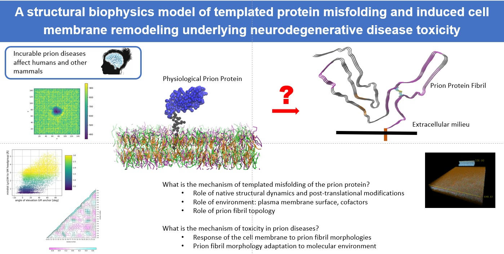

{% include base_path %}
{% for post in site.biophysics %}
{% include archive-single.html %}
{% endfor %}

Key words: Protein conformational dynamics and folding, prion protein, structural bioinformatics.
- Templated misfolding: prion protein – fibril recognition. Our current focus!
- Lipid membrane composition and GPI anchoring modulate prion protein - membrane surface interactions doi.
- Fun fact: This article was our first publication that uses a coarse-graining of a lipid membrane to observe selective prion protein - membrane binding. We compared with the Doppel protein (closest related protein to prion protein) and to our suprise the binding behavior of the two proteins was distinct.
- Team of authors: Undergraduates majoring in biomedical physics and chemistry, high schoolers.
- Side chain connectivity pattern in the globular domain of the prion protein in mammals explains native conformational dynamics and structural role of
pharmacological chaperones that prevent misfolding doi.
- Fun fact: This article was our first publication demonstrating the usefulness of normal mode analysis combined with network analysis and molecular docking to compare protein structures from the same family across species. A lot of this work happened during the covid pandemic, meeting with students via zoom daily, and each of us doing our best to navigate the unexpected.
- Team of authors: Undergraduates majoring in chemistry, biochemistry, and biomedical physics.
- Residue substitutions linked to prion protein misfolding alter the local conformational dynamics of loops doi.
- Fun fact: This article demonstrates how all-atom MD simulations illustrate conformational preferences in a flexible loop. We learned how to interpret network analysis metrics to make sense of communication across the protein structure
- Team of authors: Undergraduates majoring in biology and chemistry.